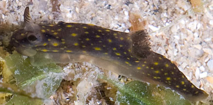
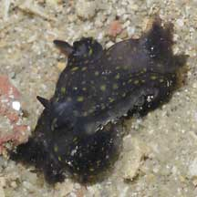

|
|
| nudibranchs text index | photo index |
| Phylum Mollusca > Class Gastropoda > sea slugs > Order Nudibranchia |
| Tiny
black gymnodoris nudibranch Gymnodoris sp. Family Gymnodorididae updated May 2020 Where seen? These tiny black nudibranchs with yellow spots are sometimes seen on some of our Northern shores. Among seaweeds and seagrasses. It appears to be seasonally common; several seen during a visit, then none seen for some time. Features: 1cm or less. Body black with yellow spots. What do they eat? Gymnodoris species are said to be 'voracious predators' of other sea slugs. |
 Changi, Jul 11 |
 A pair of nudibranchs. Pulau Sekudu, Apr 06 |
| Tiny black gymnodoris nudibranchs on Singapore shores |
On wildsingapore
flickr
|
| Other sightings on Singapore shores |